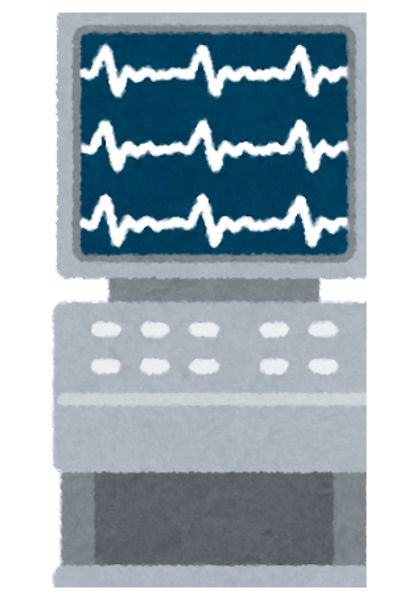

Inside the
Operating Room
What Affects Surgery Time and Recovery?
Explore 6,388 real-world surgeries from the VitalDB dataset to uncover how age, BMI, approach, and diagnosis influence surgical outcomes.

What happens inside the operating room?


Surgical Information here.
üß≠ How to Use the Surgical Outcome Explorer
- Choose an Operation Type: Select a type (e.g., Colorectal, Stomach) to filter surgeries.
- Filter by Sex: Use ♂️ / ♀️ toggles to include or exclude patients by sex.
- Select Axes: Use dropdowns to change the X-axis and Y-axis (e.g., BMI vs. ICU days).
- Toggle Emergency Cases: Use the switch to focus on emergency-only surgeries.
- Interpret the Results: View patterns in the chart and check summary stats below.
Operation types:
Sex:
Sex: